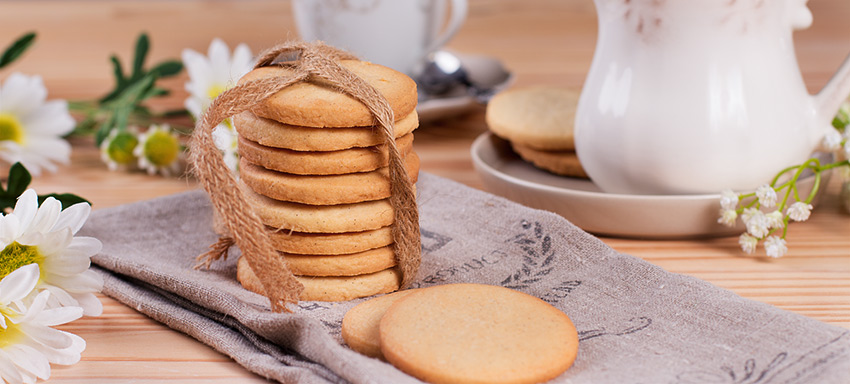

Galletas de mantequilla
Un clásico de la repostería casera, estas galletas destacan por su textura delicada, mantequillosa y
ligeramente crujiente. Sencillas, elegantes y versátiles, son perfectas para acompañar una bebida caliente,
decorar con glaseado o regalar en cualquier ocasión especial. Su masa puede enfriarse, lo que facilita su
manejo y permite prepararlas con antelación.

Ingredientes
- 225 g (1 taza) de mantequilla sin sal, a temperatura ambiente
- 150 g (¾ taza) de azúcar glas o superfina
- 1 huevo grande
- ½ cucharadita de esencia de vainilla
- 300 g (aprox. 2 ⅔ tazas) de harina de trigo, todo uso
- ¼ cucharadita de sal (opcional, si la mantequilla no es salada)
Proceso
- Precalentar y preparar:
Precalienta el horno a 170 °C. Forra bandejas con papel vegetal o silpat.
- Batir mantequilla y azúcar:
En un bol grande, bate la mantequilla con el azúcar hasta obtener una mezcla pálida, cremosa y aireada,
aproximadamente 2–3 minutos.
- Añadir huevo y esencia:
Incorpora el huevo y la vainilla. Mezcla hasta que estén bien integrados.
- Incorporar la harina (y sal):
Agrega la harina (y sal si usas). Mezcla suavemente con espátula o batidor hasta que se forme una masa
uniforme, sin sobremezclar.
- Formar las galletas:
Con las manos ligeramente enharinadas, forma bolitas de unos 20 g cada una (aprox. del tamaño de una
nuez). Puedes alisarlas o dejarlas redondas.
- Hornear:
Coloca las bolitas en la bandeja separadas unos 5 cm entre sí. Hornea durante 12–14 minutos, o hasta que
los bordes estén apenas dorados.
- Enfriar:
Deja reposar las galletas 5 minutos sobre la bandeja y luego transfiérelas a una rejilla para que se
enfríen completamente.
Obtenerás galletas tiernas por dentro, ligeramente crujientes en los bordes y con un sabor mantecoso muy
equilibrado. Son una base ideal para decorar, glasear o simplemente disfrutar solas. Gracias a su textura
delicada y sabor suave, se conservan bien en un recipiente hermético por varios días.